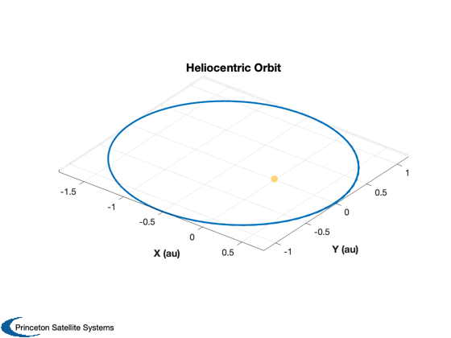
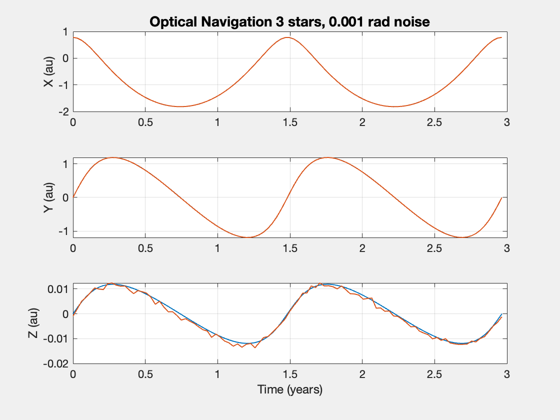

Estimate the orbit position using a range and three stars
Assume the spacecraft is orbiting the Sun and measure n star vectors. We assume we know range, but the diameter of the sun could also be used.
If you add noise you will notice that the z-position is the noisiest.
This is the basis for optical navigation.
%-------------------------------------------------------------------------- %-------------------------------------------------------------------------- % Copyright (c) 2020 Princeton Satellite Systems, Inc. % All rights reserved. %-------------------------------------------------------------------------- % Since 2020.1 %-------------------------------------------------------------------------- % Select the number of stars to use nStars = 3; % Select the amount of noise to add (radians) % Noise is added to the measured angle between the stars and the sun. oneSigma = 1e-3; % Create an orbit mu = Constant('mu sun'); aU = Constant('au'); el = [1.3*aU 0.01 0 0 0.4 0]; p = Period(el(1),mu); t = linspace(0,2*p); r = RVOrbGen(el,t,[],mu)/aU; n = length(t); Plot3D(r,'X (au)','Y (au)','Z (au)','Heliocentric Orbit'); hold on plot3(0,0,0,'.','markersize',30,'color',[1 0.8314 0.4745]); rotate3d on % Get the range range = Mag(r); uR = Unit(r); % Use any set of stars u = Unit(rand(3,nStars)); uT = u'; pUT = pinv(uT); % One position rMeas = zeros(3,n); for k = 1:n ang = acos(uT*uR(:,k)) + oneSigma*rand(nStars,1); rMeas(:,k) = range(k)*pUT*cos(ang); end [t,tL] = TimeLabl(t); s = sprintf('Optical Navigation %d stars, %5.3f rad noise',nStars,oneSigma); Plot2D(t,[r;rMeas],tL,{'X (au)','Y (au)','Z (au)'},s,... 'lin', {'[1 4]' '[2 5]' '[3 6]'}); %-------------------------------------- % $Date$ % $Id: 7a7a85737df29b2e0f5b2f964fd2ae93b2803ad5 $ 